你的沙盒，你的節奏
你不需要懂伺服器、不需要碰公司正式機。你只要會描述「我想要一個可以⋯⋯的功能」，其餘交給 Claude。
完全獨立的沙盒
每個 MVP 用自己的免費資料庫與網址。實驗、失敗、重來，都不影響任何人。
Claude 當你的工程師
用業務語言講需求，Claude 照著已經備好的規則寫程式，不會長歪。
成熟就能回收
範本強制的慣例，讓你的成果天生就是「可以裝回大系統的形狀」。
安裝工具箱
工具箱只要裝一次。看你用哪種 Claude Code，選一種做法。
① 先辦一個 GitHub 帳號（github.com，免費、一分鐘）：之後的 Supabase（放資料）與 Cloudflare（給網址）都能直接用 GitHub 登入，先辦好就不用再想兩組帳號密碼、也不用在流程中間停下來收驗證信。已經有就跳過。
② 裝 git 與 Node.js（LTS）：之後開發一定會用到——Node 跑你的專案，git 做版控。Windows 在 PowerShell 打
winget install Git.Git 與 winget install OpenJS.NodeJS.LTS；Mac 打 xcode-select --install 再到 nodejs.org 下載 LTS。裝完關掉視窗重開，讓設定生效。電腦上已經有舊版 Node（v18 以下）務必一併升級，否則可能連 Claude Code 都登不進去（打 node --version 看一眼）。③ 裝 Claude Code 並登入：用付費方案（Pro／Max，或 API 計費）——這整套工具就是在它裡面跑的。
④ 裝下面的工具箱，然後打
/doctor 讓它確認環境沒問題。公司電腦是 IT 發的話，可以請 IT 直接把 ②③ 做好，你打開就能用。裝不起來、被權限擋住、或看到跟
node 有關的錯誤 → 別自己想辦法，截圖找 IT。
還沒有 VS Code？先到 code.visualstudio.com 下載安裝（網站會自動給你 Windows 或 Mac 的版本），裝好後打開。下面的截圖是 Mac，Windows 位置一樣。
在 VS Code 左側點 擴充套件（Extensions）圖示，搜尋 Claude Code，按 Install 安裝。
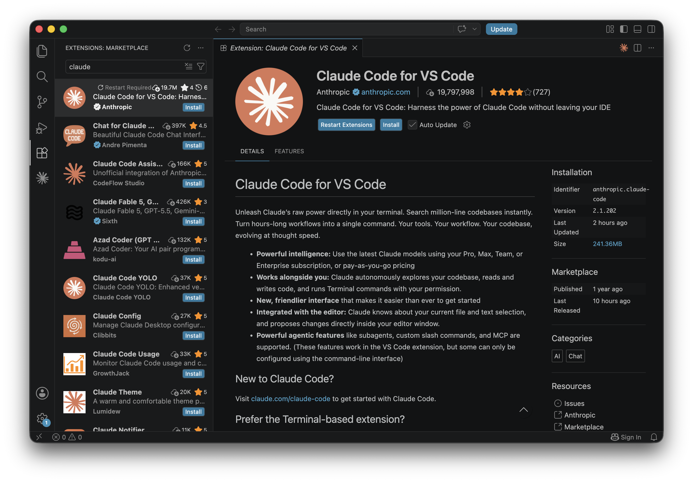
在 IDE 的 Claude Code 面板（VS Code / Cursor / JetBrains 擴充套件）最下面的輸入框打 /plugins，選出現的 Manage plugins。
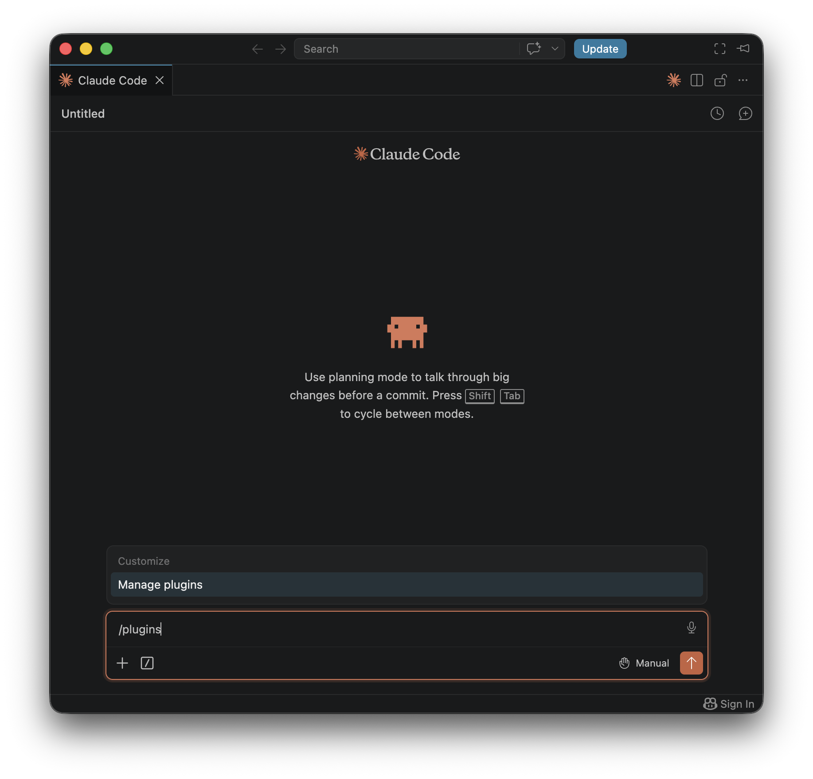
切到 Marketplaces 分頁，輸入 capsule-taiwan/capsule-develop，按 Add。
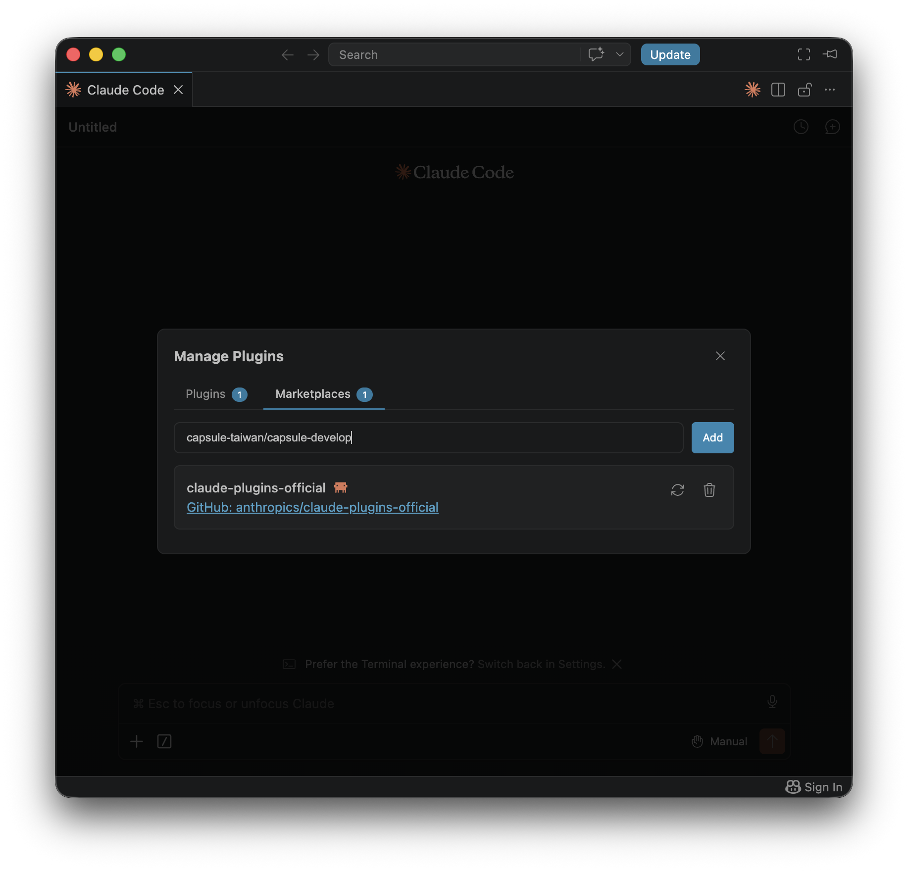
切到 Plugins 分頁，找到 capsule-develop 這張卡，按 Install。
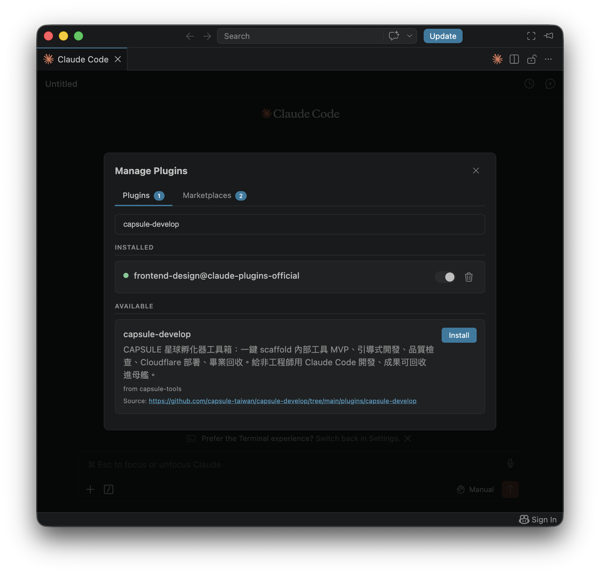
上面跳出 Restart Claude to apply plugin changes，按 Restart 套用，就完成了。
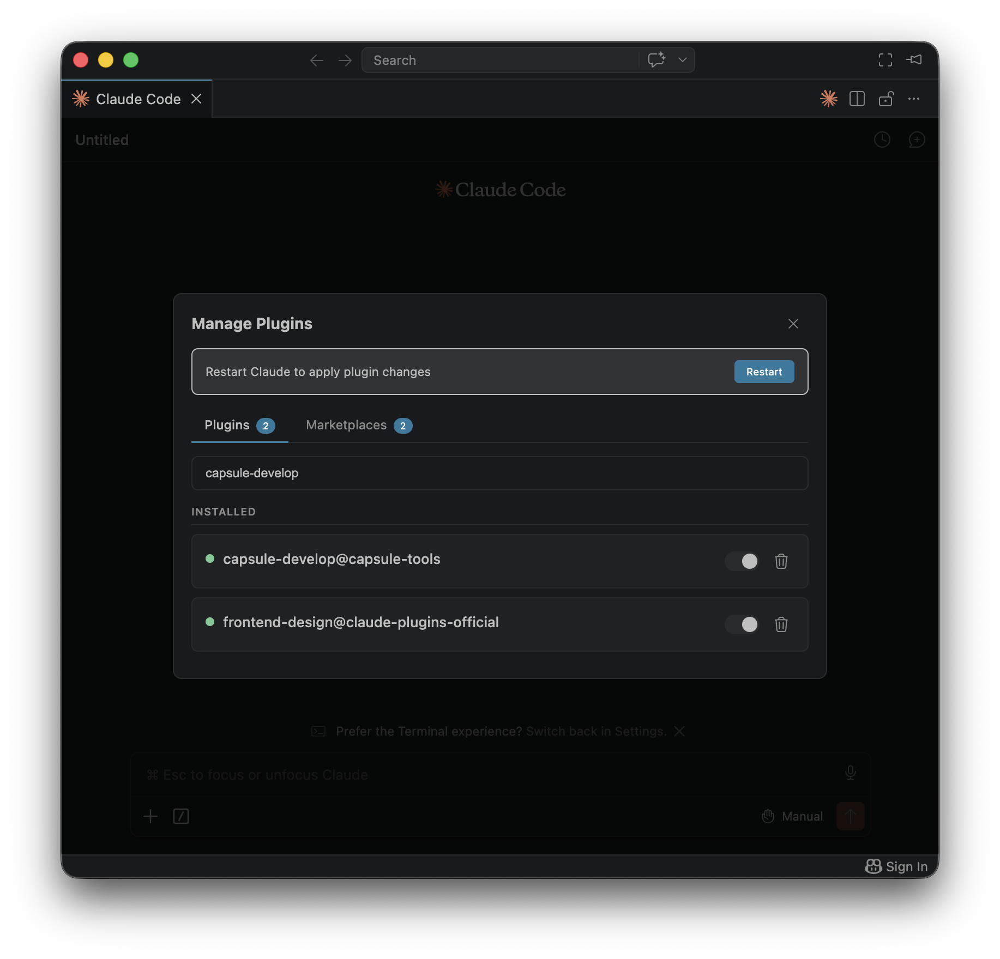
版本不同，標籤可能略有差異；也可以像「終端機」分頁那樣，直接在面板輸入框貼上那兩行 /plugin …。
點訊息輸入框旁的 ＋ → Plugins → Browse plugins。
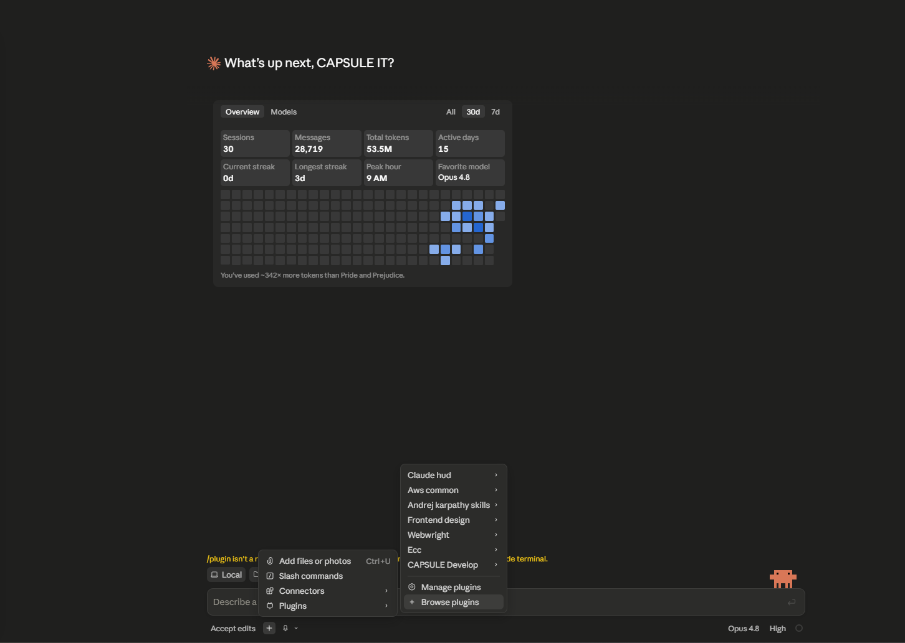
在 Directory 視窗右上角，點 ＋（Add marketplace）。
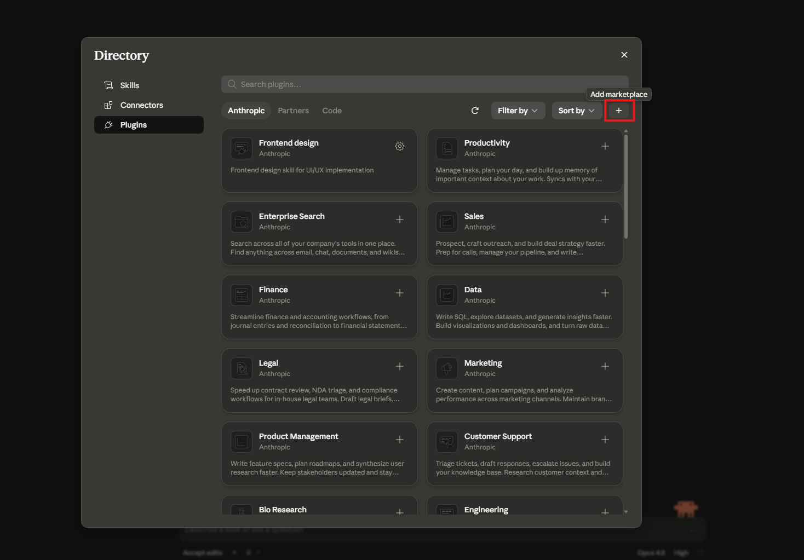
選 Add from a repository（從 GitHub repo 加入）。
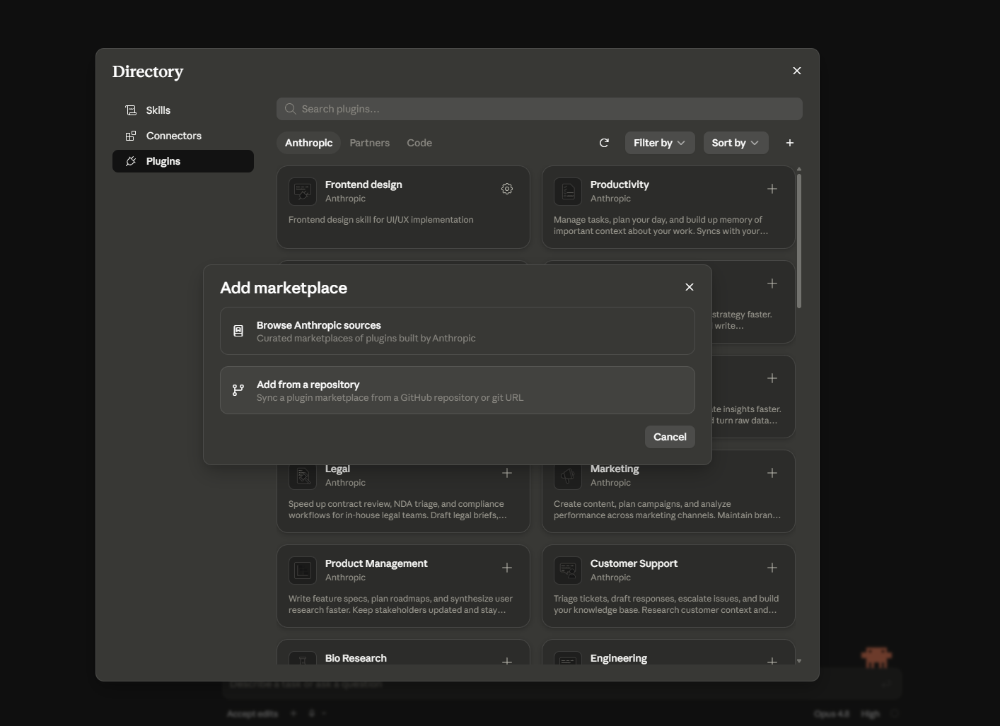
URL 貼上 capsule-taiwan/capsule-develop，按 Sync。
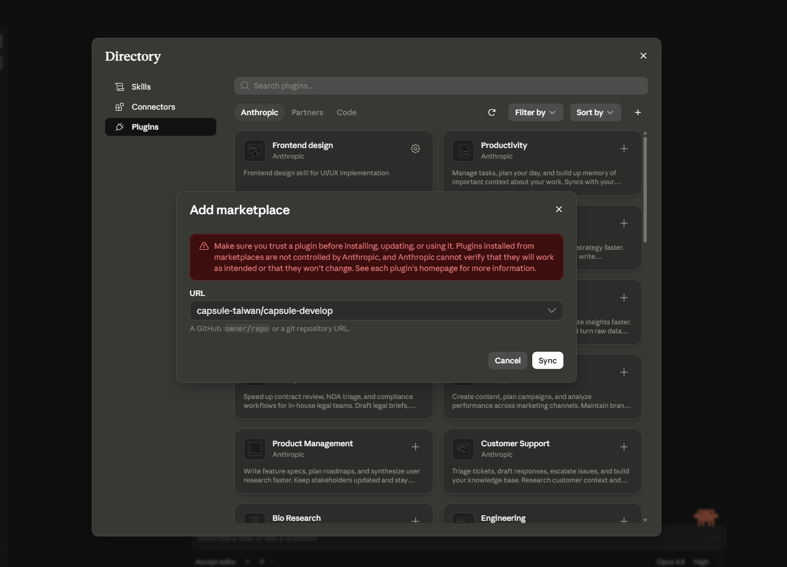
找到 CAPSULE Develop（capsule-tools）這張卡，點它安裝並啟用，就完成了。
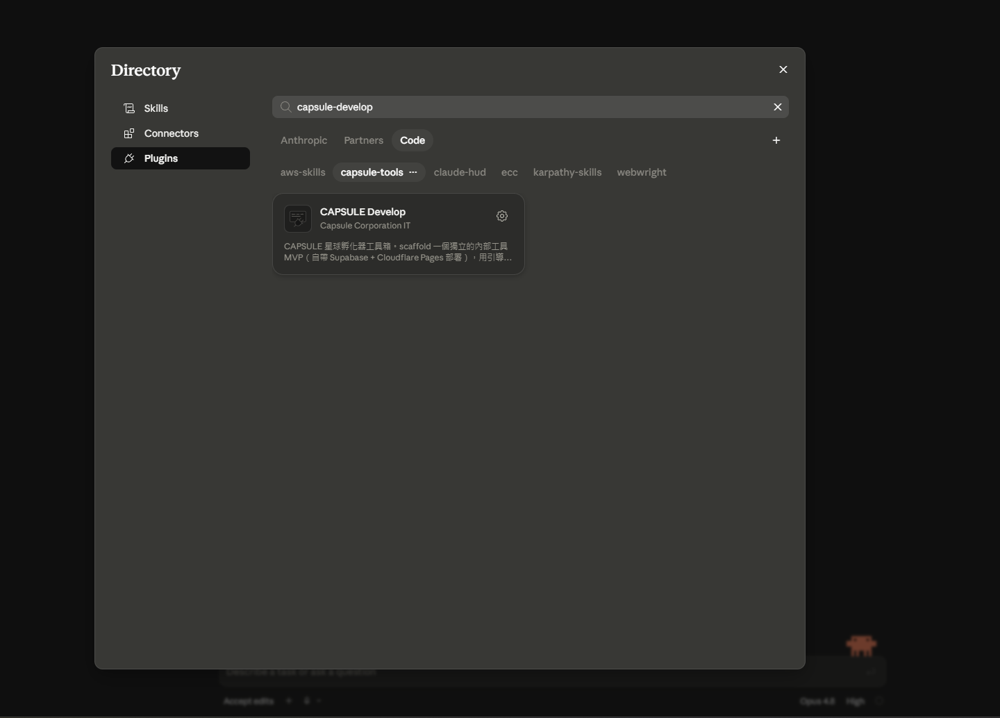
打開終端機版 Claude Code（或 IDE 內建的 Claude Code 終端機）。
貼上這兩行 /plugin、各按 Enter：
/plugin marketplace add https://github.com/capsule-taiwan/capsule-develop.git/plugin install capsule-develop@capsule-tools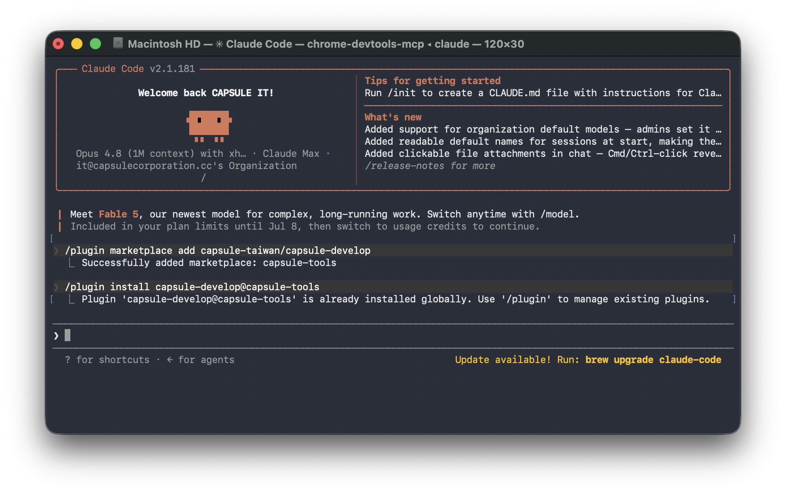
輸入指令後，看到多出一排新的 /指令，就完成了。
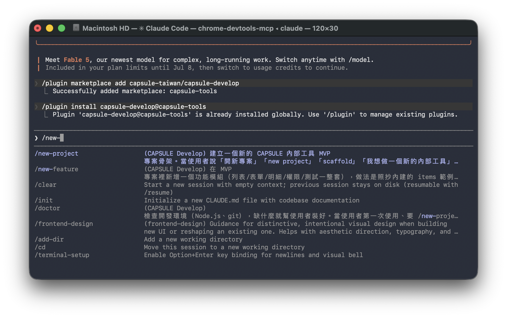
這兩行 /plugin 只有「終端機版 Claude Code」能用；桌面版 App 請切上面的「Claude 桌面版」分頁。
裝好之後，怎麼開始？
裝好工具箱後，你大多不用打 /指令——直接在輸入框用一句話說你要什麼，Claude 就會挑對的技能、帶你一步步做。要貼 token 時也是貼進同一個框。
示意圖，實際畫面以你的 Claude Desktop 為準
跟 Claude 說的話、要貼的 token，全都打在最下面這個框。
第一次裝工具箱是用「點的」（桌面版 ＋ → Plugins，見上面〈安裝〉）。
找到最下面的輸入框
Claude Desktop 開好後，畫面最下面那條就是「輸入框」——你跟 Claude 講的話都打在這裡。
用一句話說你要什麼
在框裡用白話說「幫我做一個○○」、按 Enter，Claude 就會挑對的技能、帶你把它建起來。（想打 /new-project 也行，但不是必須。）
要你貼東西時，貼回同一個框
Claude 有時會請你貼一段 token（例如 Supabase 的）。複製後，貼回這個輸入框、按 Enter 就好——不用開任何設定檔。
長出一個新專案
找一個你放得住東西的地方（例如「文件」底下），在那裡開 Claude Code，直接跟它說「幫我開一個新專案」（或打 /new-project）。它會自己建一個以專案代號命名的資料夾，不會把檔案灑在你原本的資料夾裡。接著它會問你專案名稱、帶你建立自己的免費 Supabase、把本地開發環境跑起來（第一次會先確認 Step 0 裝的 git 與 Node 都就緒）。
/new-project接上免費的資料庫（約 3 分鐘）
每個 MVP 用一個自己的免費雲端資料庫（Supabase），放資料、管登入，跟別人完全分開。你不用懂它——照下面做、把兩個值貼給 Claude 就好。
免費註冊
打開 supabase.com，用 Google 或 email 免費登入。
New project
按綠色的 New project，取個名字、區域選 Southeast Asia (Singapore)、設一組資料庫密碼（記起來）。等約 1 分鐘讓它建好。
產一個 token 貼給 Claude
到 account/tokens 產一個 access token，貼回聊天視窗。Claude 會自動幫你建好資料表、把畫面跑起來——你不用碰任何設定。
登入：把專案代號與你的 Supabase 網址給工程師，他會產一組這個專案專屬的金鑰給你；拿到後貼給 Claude、打 /connect-login，它會自動接好，不用再回頭問任何人。
建議：請直接用真實的資料與真實的流程來測——假資料測不出格式亂、備註超長、同一家客戶三種寫法這類真問題。只有薪資、個資、客戶合約金額這種特別敏感的，動之前先問 IT 一聲。
八個技能
你不用記這些指令、也不用自己打——直接用一句話跟 Claude 說你想做什麼（例如「幫我開一個新專案」「幫我做一個管理庫存的小工具」），它就會挑對的技能、一步步帶你做。
確認你的電腦環境沒問題（git、Node.js 版本），有缺或太舊會告訴你怎麼處理。
從範本長出一個全新的 MVP 專案骨架。
用業務選擇題訪談你的需求，整理成規格。
照範例模組長出你要的新功能（列表／表單／權限／測試一整套）。
幫你建立資料庫變更檔，自動取號。
跑測試＋型別＋契約檢查，全綠才算完成。
部署到你自己的 Cloudflare Pages（免費）。
拿到工程師給的登入金鑰後，一鍵接上公司 Google 登入。
產生「畢業申請包」，交給 IT 評估是否收進大系統。
把工具箱更新到最新版；有新版時開場會自動提醒你。
黃金路徑
你只要描述想要什麼，Claude 會依序把每一步做完，並在每步後告訴你怎麼在畫面上驗收。
講清楚需求
/task-brief：用生活化的問題確認要記錄哪些資料、誰能看誰能改。
建立資料
/next-migration 建資料表，套進你自己的 Supabase。
做出畫面
照 items 範例長出列表、表單、明細——全用現成的共用元件，不會長歪。
檢查
/check 全綠；再自己在畫面上點過一遍（新增／編輯／刪除）。
上線
/deploy 推上你自己的網址，同事用公司信箱就能登入使用。
回收契約：八條
你不用背這些——Claude 會遵守，護欄會把關。它們的用途是讓你的成果好維護、換人接手也看得懂；萬一哪天真的要收進母艦，也不用重寫。
三道護欄
這些會擋在你（和 Claude）前面。被擋下來，就代表這件事該找 IT，而不是想辦法繞過。
guard-prod
任何碰到公司正式機或測試機的操作一律硬擋；service account 金鑰、私鑰被寫進程式碼或版控時也會擋下來。
guard-platform-area
擋掉改動共用元件、權限地基、設定檔——落實回收契約第六條。
guard-git
擋掉會覆蓋歷史、難以復原的危險 git 操作。
上線到你自己的網址
MVP 是純靜態網站，Cloudflare Pages 免費層綽綽有餘。一次設定 Cloudflare 金鑰，之後每次更新只要再跑一次 /deploy，網址不變。
Cloudflare Pages（免費）
跑 /deploy：你產一次 Cloudflare 金鑰，Claude 就用它把網站上傳，給你一個 *.pages.dev 網址。要更新就再跑一次。
只有公司的人進得來
登入採公司 Google 帳號（限 @capsulecorporation.cc），資料也逐筆受保護。上線後只有公司同事登得進去、看得到資料，不用另外設定。
接 Google Sheet：一條規定，一個建議
很多工具最後都會需要跟 Google Sheet 交換資料。這裡只有一條硬規定，其餘你自己判斷。
這樣做的原因：不會綁在某個人身上（那個人離職你的工具就壞）、權限只給到該碰的那幾份 Sheet、而且看得出是誰動的。
建議：輸入端做在系統
因為輸入要「管得住」：擋掉填錯的、選項統一（部門用下拉不會有三種寫法）、誰改了什麼有紀錄、權限分得開。Sheet 是誰都能打任何東西進去，而且有人排序時只選一欄就會整份錯位。
建議：輸出端做在 Sheet
因為看資料要「夠靈活」：大家本來就會篩選、排序、拉樞紐；主管想換角度看自己拉就好，不用回頭找你改程式；要貼進簡報、丟給會計都是現成的。
一句話：要寫進去的走系統，要拿出來看的走 Sheet。這只是建議——你的情境反過來比較順就反過來做。細節與實際案例見「怎麼運作」那一頁。
你不是從零開始
新專案一長出來就是一個能跑的系統，附一個完整的範例功能 items 供你照抄。
- 登入與權限：公司 Google 帳號登入（限 @capsulecorporation.cc），第一個登入者自動是管理員，三種角色現成。
- 一整套 UI 元件：表格、彈窗、表單、分頁、按鈕都備好了。
- items 範例功能：列表＋新增＋編輯＋刪除＋權限，完整可跑。
- 側邊選單自動聚合：加一個新功能，選單自動出現，不用改共用檔。
- 回收契約 CLAUDE.md：Claude 每次都會讀，保證不長歪。
- 已驗證可跑：安裝、型別檢查、正式打包全部通過。
運作方式
整個工具箱放在公司自己的 GitHub，安裝就是從那裡拿一份到你電腦；之後有更新也從同一個地方來。你不用管細節，但想知道的話——
住在公司 GitHub
工具箱本體在 capsule-taiwan/capsule-develop（公司的公開 repo）。技能、安全護欄、專案範本、還有你正在看的這頁，全都在裡面。
安裝＝從那裡拿一份
你打的那兩行指令，就是叫 Claude Code 去那個 repo 把工具箱抓一份到你電腦、把技能與護欄裝起來。
更新＝再抓一次
平台團隊把新版推上 GitHub 後，你用 /plugin 更新一下就拿到最新的技能與範本；你已經做好的專案不受影響。